Der Vorschlag ist eine Heuristik aus der Bestandsaufnahme (docs/beta-inventar-2026-11-17.md). Entscheidung: Marcel.
| Vorschau | Datei | Groesse | Vorschlag | Begruendung | Entscheidung |
|---|
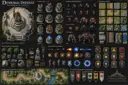 | dist/assets/asset-atlas.webp | 1960 KB | PRUEFEN | kein eindeutiger Befund, Runtime-Request-Log verifizieren | |
| dist/assets/church-ende-alpha8.webp | 487 KB | ARCHIV/LOESCHEN (Vorschlag) | Legacy-Version/Zwischenstand laut Bestandsaufnahme | |
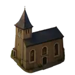 | dist/assets/church-ende-style2.webp | 304 KB | PRUEFEN | kein eindeutiger Befund, Runtime-Request-Log verifizieren | |
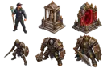 | dist/assets/guardian-atlas-v27.webp | 1224 KB | ARCHIV/LOESCHEN (Vorschlag) | Legacy-Version/Zwischenstand laut Bestandsaufnahme | |
| dist/assets/hellscape-map-v1.png | 2982 KB | ARCHIV/LOESCHEN (Vorschlag) | Legacy-Version/Zwischenstand laut Bestandsaufnahme | |
| dist/assets/lion-ende-alpha8.webp | 481 KB | ARCHIV/LOESCHEN (Vorschlag) | Legacy-Version/Zwischenstand laut Bestandsaufnahme | |
| dist/assets/monument-level1-v2.webp | 30 KB | ARCHIV/LOESCHEN (Vorschlag) | Legacy-Version/Zwischenstand laut Bestandsaufnahme | |
| – | dist/assets/projectile-fx-v3.svg | 5 KB | ARCHIV/LOESCHEN (Vorschlag) | Legacy-Version/Zwischenstand laut Bestandsaufnahme | |
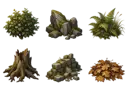 | dist/assets/scenery-alpha8.webp | 142 KB | ARCHIV/LOESCHEN (Vorschlag) | Legacy-Version/Zwischenstand laut Bestandsaufnahme | |
| dist/assets/stone-terrain-v27.png | 3309 KB | ARCHIV/LOESCHEN (Vorschlag) | Legacy-Version/Zwischenstand laut Bestandsaufnahme | |
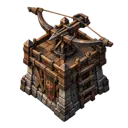 | dist/assets/tower-ballista-l1-v2.png | 1716 KB | ARCHIV/LOESCHEN (Vorschlag) | Legacy-Version/Zwischenstand laut Bestandsaufnahme | |
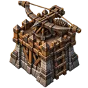 | dist/assets/tower-ballista-l2-v2.png | 2097 KB | ARCHIV/LOESCHEN (Vorschlag) | Legacy-Version/Zwischenstand laut Bestandsaufnahme | |
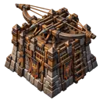 | dist/assets/tower-ballista-l3-v2.png | 2393 KB | ARCHIV/LOESCHEN (Vorschlag) | Legacy-Version/Zwischenstand laut Bestandsaufnahme | |
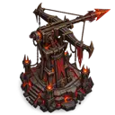 | dist/assets/tower-ballista-rift-v1.png | 1765 KB | ARCHIV/LOESCHEN (Vorschlag) | Legacy-Version/Zwischenstand laut Bestandsaufnahme | |
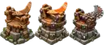 | dist/assets/tower-boomerang-atlas.webp | 7 KB | PRUEFEN | kein eindeutiger Befund, Runtime-Request-Log verifizieren | |
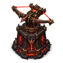 | dist/assets/tower-bow-infernal-v1.webp | 1102 KB | ARCHIV/LOESCHEN (Vorschlag) | Legacy-Version/Zwischenstand laut Bestandsaufnahme | |
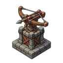 | dist/assets/tower-bow-l1-v2.webp | 697 KB | ARCHIV/LOESCHEN (Vorschlag) | Legacy-Version/Zwischenstand laut Bestandsaufnahme | |
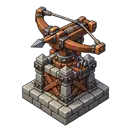 | dist/assets/tower-bow-l2-v2.webp | 864 KB | ARCHIV/LOESCHEN (Vorschlag) | Legacy-Version/Zwischenstand laut Bestandsaufnahme | |
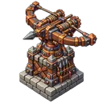 | dist/assets/tower-bow-l3-v2.webp | 1040 KB | ARCHIV/LOESCHEN (Vorschlag) | Legacy-Version/Zwischenstand laut Bestandsaufnahme | |
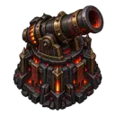 | dist/assets/tower-cannon-ash-v1.webp | 1395 KB | ARCHIV/LOESCHEN (Vorschlag) | Legacy-Version/Zwischenstand laut Bestandsaufnahme | |
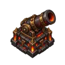 | dist/assets/tower-cannon-l1-v2.webp | 907 KB | ARCHIV/LOESCHEN (Vorschlag) | Legacy-Version/Zwischenstand laut Bestandsaufnahme | |
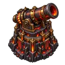 | dist/assets/tower-cannon-l2-v2.webp | 1513 KB | ARCHIV/LOESCHEN (Vorschlag) | Legacy-Version/Zwischenstand laut Bestandsaufnahme | |
| dist/assets/tower-cannon-l3-v2.webp | 1696 KB | ARCHIV/LOESCHEN (Vorschlag) | Legacy-Version/Zwischenstand laut Bestandsaufnahme | |
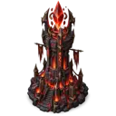 | dist/assets/tower-mage-hellfire-v1.png | 1246 KB | ARCHIV/LOESCHEN (Vorschlag) | Legacy-Version/Zwischenstand laut Bestandsaufnahme | |
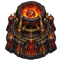 | dist/assets/tower-mortar-volcanic-v1.png | 2303 KB | ARCHIV/LOESCHEN (Vorschlag) | Legacy-Version/Zwischenstand laut Bestandsaufnahme | |
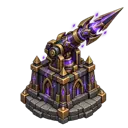 | dist/assets/tower-rift-lance-l1.webp | 1045 KB | PRUEFEN | kein eindeutiger Befund, Runtime-Request-Log verifizieren | |
| dist/assets/tower-rift-lance-l2.webp | 1311 KB | PRUEFEN | kein eindeutiger Befund, Runtime-Request-Log verifizieren | |
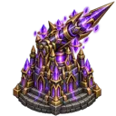 | dist/assets/tower-rift-lance-l3.webp | 1517 KB | PRUEFEN | kein eindeutiger Befund, Runtime-Request-Log verifizieren | |
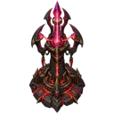 | dist/assets/tower-rift-lance-v1.webp | 878 KB | ARCHIV/LOESCHEN (Vorschlag) | Legacy-Version/Zwischenstand laut Bestandsaufnahme | |
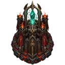 | dist/assets/tower-warden-shrine-v1.png | 1654 KB | ARCHIV/LOESCHEN (Vorschlag) | Legacy-Version/Zwischenstand laut Bestandsaufnahme | |
| Vorschau | Datei | Groesse | Vorschlag | Begruendung | Entscheidung |
|---|
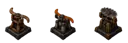 | dist/assets/elemental/boomerang-towers-style2.webp | 117 KB | PRUEFEN | dynamisch zusammengesetzte Pfade moeglich | |
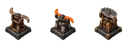 | dist/assets/elemental/boomerang-towers-v1.webp | 391 KB | PRUEFEN | dynamisch zusammengesetzte Pfade moeglich | |
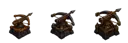 | dist/assets/elemental/bow-towers-style2.webp | 126 KB | PRUEFEN | dynamisch zusammengesetzte Pfade moeglich | |
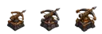 | dist/assets/elemental/bow-towers-v1.webp | 399 KB | PRUEFEN | dynamisch zusammengesetzte Pfade moeglich | |
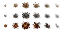 | dist/assets/elemental/cannon-impacts-style2.webp | 107 KB | PRUEFEN | dynamisch zusammengesetzte Pfade moeglich | |
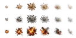 | dist/assets/elemental/cannon-impacts-v1.webp | 123 KB | PRUEFEN | dynamisch zusammengesetzte Pfade moeglich | |
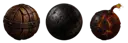 | dist/assets/elemental/cannon-projectiles-style2.webp | 19 KB | PRUEFEN | dynamisch zusammengesetzte Pfade moeglich | |
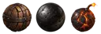 | dist/assets/elemental/cannon-projectiles-v1.webp | 23 KB | PRUEFEN | dynamisch zusammengesetzte Pfade moeglich | |
| dist/assets/elemental/cannon-towers-style2.webp | 118 KB | PRUEFEN | dynamisch zusammengesetzte Pfade moeglich | |
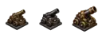 | dist/assets/elemental/cannon-towers-v1.webp | 407 KB | PRUEFEN | dynamisch zusammengesetzte Pfade moeglich | |
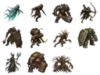 | dist/assets/elemental/enemies-v1.webp | 612 KB | PRUEFEN | dynamisch zusammengesetzte Pfade moeglich | |
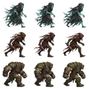 | dist/assets/elemental/enemies-walk-alpha8.webp | 484 KB | PRUEFEN | dynamisch zusammengesetzte Pfade moeglich | |
| – | dist/assets/elemental/flight-manifest.json | 1 KB | PRUEFEN | dynamisch zusammengesetzte Pfade moeglich | |
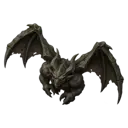 | dist/assets/elemental/gargoyle-style2.webp | 41 KB | PRUEFEN | dynamisch zusammengesetzte Pfade moeglich | |
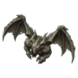 | dist/assets/elemental/gargoyle-v1.webp | 44 KB | PRUEFEN | dynamisch zusammengesetzte Pfade moeglich | |
| – | dist/assets/elemental/goethestrasse-manifest.json | 0 KB | PRUEFEN | dynamisch zusammengesetzte Pfade moeglich | |
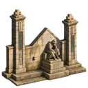 | dist/assets/elemental/goethestrasse-memorial-v1.webp | 176 KB | PRUEFEN | dynamisch zusammengesetzte Pfade moeglich | |
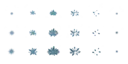 | dist/assets/elemental/mage-impacts-style2.webp | 46 KB | PRUEFEN | dynamisch zusammengesetzte Pfade moeglich | |
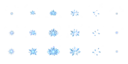 | dist/assets/elemental/mage-impacts-v1.webp | 84 KB | PRUEFEN | dynamisch zusammengesetzte Pfade moeglich | |
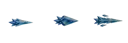 | dist/assets/elemental/mage-projectiles-style2.webp | 8 KB | PRUEFEN | dynamisch zusammengesetzte Pfade moeglich | |
| dist/assets/elemental/mage-projectiles-v1.webp | 13 KB | PRUEFEN | dynamisch zusammengesetzte Pfade moeglich | |
| dist/assets/elemental/mage-towers-v1.webp | 407 KB | PRUEFEN | dynamisch zusammengesetzte Pfade moeglich | |
| – | dist/assets/elemental/manifest.json | 3 KB | PRUEFEN | dynamisch zusammengesetzte Pfade moeglich | |
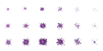 | dist/assets/elemental/rift-impacts-style2.webp | 53 KB | PRUEFEN | dynamisch zusammengesetzte Pfade moeglich | |
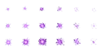 | dist/assets/elemental/rift-impacts-v1.webp | 103 KB | PRUEFEN | dynamisch zusammengesetzte Pfade moeglich | |
| dist/assets/elemental/rift-projectiles-style2.webp | 6 KB | PRUEFEN | dynamisch zusammengesetzte Pfade moeglich | |
| dist/assets/elemental/rift-projectiles-v1.webp | 12 KB | PRUEFEN | dynamisch zusammengesetzte Pfade moeglich | |
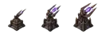 | dist/assets/elemental/rift-towers-v1.webp | 391 KB | PRUEFEN | dynamisch zusammengesetzte Pfade moeglich | |
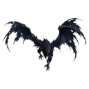 | dist/assets/elemental/shadowwing-style2.webp | 36 KB | PRUEFEN | dynamisch zusammengesetzte Pfade moeglich | |
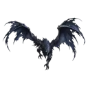 | dist/assets/elemental/shadowwing-v1.webp | 38 KB | PRUEFEN | dynamisch zusammengesetzte Pfade moeglich | |
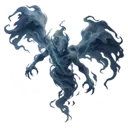 | dist/assets/elemental/stormwing-style2.webp | 76 KB | PRUEFEN | dynamisch zusammengesetzte Pfade moeglich | |
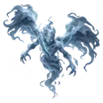 | dist/assets/elemental/stormwing-v1.webp | 80 KB | PRUEFEN | dynamisch zusammengesetzte Pfade moeglich | |
| Vorschau | Datei | Groesse | Vorschlag | Begruendung | Entscheidung |
|---|
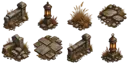 | dist/assets/expansion-v2/environment-1.webp | 61 KB | PRUEFEN | kein eindeutiger Befund, Runtime-Request-Log verifizieren | |
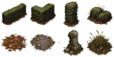 | dist/assets/expansion-v2/environment-2.webp | 60 KB | PRUEFEN | kein eindeutiger Befund, Runtime-Request-Log verifizieren | |
| dist/assets/expansion-v2/environment-3.webp | 66 KB | PRUEFEN | kein eindeutiger Befund, Runtime-Request-Log verifizieren | |
| dist/assets/expansion-v2/environment-4.webp | 56 KB | PRUEFEN | kein eindeutiger Befund, Runtime-Request-Log verifizieren | |
| dist/assets/expansion-v2/environment-5.webp | 65 KB | PRUEFEN | kein eindeutiger Befund, Runtime-Request-Log verifizieren | |
| dist/assets/expansion-v2/environment-6.webp | 72 KB | PRUEFEN | kein eindeutiger Befund, Runtime-Request-Log verifizieren | |
| dist/assets/expansion-v2/environment-7.webp | 76 KB | PRUEFEN | kein eindeutiger Befund, Runtime-Request-Log verifizieren | |
| dist/assets/expansion-v2/kirchende-bark.webp | 16 KB | PRUEFEN | kein eindeutiger Befund, Runtime-Request-Log verifizieren | |
| dist/assets/expansion-v2/kirchende-grove.webp | 14 KB | PRUEFEN | kein eindeutiger Befund, Runtime-Request-Log verifizieren | |
| dist/assets/expansion-v2/kirchende-roots.webp | 16 KB | PRUEFEN | kein eindeutiger Befund, Runtime-Request-Log verifizieren | |
| dist/assets/expansion-v2/kirchende-splinter.webp | 9 KB | PRUEFEN | kein eindeutiger Befund, Runtime-Request-Log verifizieren | |
| dist/assets/expansion-v2/kirchende-wardlight.webp | 13 KB | PRUEFEN | kein eindeutiger Befund, Runtime-Request-Log verifizieren | |
| – | dist/assets/expansion-v2/manifest.json | 9 KB | PRUEFEN | keine Bilddatei (Manifest/Doku/Daten), kein Runtime-Fetch im Scan | |
| Vorschau | Datei | Groesse | Vorschlag | Begruendung | Entscheidung |
|---|
| dist/assets/hero/kim-inventory-portrait-v1.webp | 133 KB | PRUEFEN | Helden-Asset, Referenz-Lock docs/art/HERO_REFERENCE_LOCK_20261107.md | |
| dist/assets/hero/kim-walk-alpha8.webp | 327 KB | PRUEFEN | Helden-Asset, Referenz-Lock docs/art/HERO_REFERENCE_LOCK_20261107.md | |
| dist/assets/hero/marcel-down-actions-v5b.webp | 145 KB | PRUEFEN | Helden-Asset, Referenz-Lock docs/art/HERO_REFERENCE_LOCK_20261107.md | |
| dist/assets/hero/marcel-lantern-sprite-v1.webp | 11 KB | PRUEFEN | Helden-Asset, Referenz-Lock docs/art/HERO_REFERENCE_LOCK_20261107.md | |
| dist/assets/hero/marcel-portrait-alpha9.webp | 230 KB | PRUEFEN | Helden-Asset, Referenz-Lock docs/art/HERO_REFERENCE_LOCK_20261107.md | |
| dist/assets/hero/marcel-walk-alpha9.webp | 307 KB | PRUEFEN | Helden-Asset, Referenz-Lock docs/art/HERO_REFERENCE_LOCK_20261107.md | |
| dist/assets/hero/marcel-walk-reference-v1.webp | 178 KB | PRUEFEN | Helden-Asset, Referenz-Lock docs/art/HERO_REFERENCE_LOCK_20261107.md | |
| Vorschau | Datei | Groesse | Vorschlag | Begruendung | Entscheidung |
|---|
| dist/assets/impacts-v2/frames/impact_boomerang_00.png | 13 KB | PRUEFEN | kein eindeutiger Befund, Runtime-Request-Log verifizieren | |
| dist/assets/impacts-v2/frames/impact_boomerang_01.png | 32 KB | PRUEFEN | kein eindeutiger Befund, Runtime-Request-Log verifizieren | |
| dist/assets/impacts-v2/frames/impact_boomerang_02.png | 47 KB | PRUEFEN | kein eindeutiger Befund, Runtime-Request-Log verifizieren | |
| dist/assets/impacts-v2/frames/impact_boomerang_03.png | 33 KB | PRUEFEN | kein eindeutiger Befund, Runtime-Request-Log verifizieren | |
| dist/assets/impacts-v2/frames/impact_boomerang_04.png | 25 KB | PRUEFEN | kein eindeutiger Befund, Runtime-Request-Log verifizieren | |
| dist/assets/impacts-v2/frames/impact_boomerang_05.png | 14 KB | PRUEFEN | kein eindeutiger Befund, Runtime-Request-Log verifizieren | |
| dist/assets/impacts-v2/frames/impact_bow_00.png | 14 KB | PRUEFEN | kein eindeutiger Befund, Runtime-Request-Log verifizieren | |
| dist/assets/impacts-v2/frames/impact_bow_01.png | 24 KB | PRUEFEN | kein eindeutiger Befund, Runtime-Request-Log verifizieren | |
| dist/assets/impacts-v2/frames/impact_bow_02.png | 35 KB | PRUEFEN | kein eindeutiger Befund, Runtime-Request-Log verifizieren | |
| dist/assets/impacts-v2/frames/impact_bow_03.png | 23 KB | PRUEFEN | kein eindeutiger Befund, Runtime-Request-Log verifizieren | |
| dist/assets/impacts-v2/frames/impact_bow_04.png | 15 KB | PRUEFEN | kein eindeutiger Befund, Runtime-Request-Log verifizieren | |
| dist/assets/impacts-v2/frames/impact_bow_05.png | 10 KB | PRUEFEN | kein eindeutiger Befund, Runtime-Request-Log verifizieren | |
| dist/assets/impacts-v2/frames/impact_cannon_00.png | 19 KB | PRUEFEN | kein eindeutiger Befund, Runtime-Request-Log verifizieren | |
| dist/assets/impacts-v2/frames/impact_cannon_01.png | 34 KB | PRUEFEN | kein eindeutiger Befund, Runtime-Request-Log verifizieren | |
| dist/assets/impacts-v2/frames/impact_cannon_02.png | 51 KB | PRUEFEN | kein eindeutiger Befund, Runtime-Request-Log verifizieren | |
| dist/assets/impacts-v2/frames/impact_cannon_03.png | 34 KB | PRUEFEN | kein eindeutiger Befund, Runtime-Request-Log verifizieren | |
| dist/assets/impacts-v2/frames/impact_cannon_04.png | 23 KB | PRUEFEN | kein eindeutiger Befund, Runtime-Request-Log verifizieren | |
| dist/assets/impacts-v2/frames/impact_cannon_05.png | 14 KB | PRUEFEN | kein eindeutiger Befund, Runtime-Request-Log verifizieren | |
| dist/assets/impacts-v2/frames/impact_mage_00.png | 15 KB | PRUEFEN | kein eindeutiger Befund, Runtime-Request-Log verifizieren | |
| dist/assets/impacts-v2/frames/impact_mage_01.png | 37 KB | PRUEFEN | kein eindeutiger Befund, Runtime-Request-Log verifizieren | |
| dist/assets/impacts-v2/frames/impact_mage_02.png | 55 KB | PRUEFEN | kein eindeutiger Befund, Runtime-Request-Log verifizieren | |
| dist/assets/impacts-v2/frames/impact_mage_03.png | 37 KB | PRUEFEN | kein eindeutiger Befund, Runtime-Request-Log verifizieren | |
| dist/assets/impacts-v2/frames/impact_mage_04.png | 21 KB | PRUEFEN | kein eindeutiger Befund, Runtime-Request-Log verifizieren | |
| dist/assets/impacts-v2/frames/impact_mage_05.png | 14 KB | PRUEFEN | kein eindeutiger Befund, Runtime-Request-Log verifizieren | |
| dist/assets/impacts-v2/frames/impact_rift_00.png | 17 KB | PRUEFEN | kein eindeutiger Befund, Runtime-Request-Log verifizieren | |
| dist/assets/impacts-v2/frames/impact_rift_01.png | 34 KB | PRUEFEN | kein eindeutiger Befund, Runtime-Request-Log verifizieren | |
| dist/assets/impacts-v2/frames/impact_rift_02.png | 46 KB | PRUEFEN | kein eindeutiger Befund, Runtime-Request-Log verifizieren | |
| dist/assets/impacts-v2/frames/impact_rift_03.png | 31 KB | PRUEFEN | kein eindeutiger Befund, Runtime-Request-Log verifizieren | |
| dist/assets/impacts-v2/frames/impact_rift_04.png | 21 KB | PRUEFEN | kein eindeutiger Befund, Runtime-Request-Log verifizieren | |
| dist/assets/impacts-v2/frames/impact_rift_05.png | 14 KB | PRUEFEN | kein eindeutiger Befund, Runtime-Request-Log verifizieren | |
| Vorschau | Datei | Groesse | Vorschlag | Begruendung | Entscheidung |
|---|
| dist/assets/items/v2-masters/icon_amulet.png | 30 KB | PRUEFEN | kein eindeutiger Befund, Runtime-Request-Log verifizieren | |
| dist/assets/items/v2-masters/icon_armor.png | 71 KB | PRUEFEN | kein eindeutiger Befund, Runtime-Request-Log verifizieren | |
| dist/assets/items/v2-masters/icon_boots.png | 61 KB | PRUEFEN | kein eindeutiger Befund, Runtime-Request-Log verifizieren | |
| dist/assets/items/v2-masters/icon_gloves.png | 55 KB | PRUEFEN | kein eindeutiger Befund, Runtime-Request-Log verifizieren | |
| dist/assets/items/v2-masters/icon_head.png | 58 KB | PRUEFEN | kein eindeutiger Befund, Runtime-Request-Log verifizieren | |
| dist/assets/items/v2-masters/icon_ring1.png | 41 KB | PRUEFEN | kein eindeutiger Befund, Runtime-Request-Log verifizieren | |
| dist/assets/items/v2-masters/icon_ring2.png | 47 KB | PRUEFEN | kein eindeutiger Befund, Runtime-Request-Log verifizieren | |
| dist/assets/items/v2-masters/icon_weapon.png | 29 KB | PRUEFEN | kein eindeutiger Befund, Runtime-Request-Log verifizieren | |
| Vorschau | Datei | Groesse | Vorschlag | Begruendung | Entscheidung |
|---|
| dist/assets/kirchende/ground-photo-v2.webp | 284 KB | ARCHIV/LOESCHEN (Vorschlag) | Legacy-Version/Zwischenstand laut Bestandsaufnahme | |
| dist/assets/kirchende/item-bark.webp | 21 KB | PRUEFEN | kein eindeutiger Befund, Runtime-Request-Log verifizieren | |
| dist/assets/kirchende/item-grove.webp | 18 KB | PRUEFEN | kein eindeutiger Befund, Runtime-Request-Log verifizieren | |
| dist/assets/kirchende/item-roots.webp | 25 KB | PRUEFEN | kein eindeutiger Befund, Runtime-Request-Log verifizieren | |
| dist/assets/kirchende/item-splinter.webp | 8 KB | PRUEFEN | kein eindeutiger Befund, Runtime-Request-Log verifizieren | |
| dist/assets/kirchende/item-wardlight.webp | 16 KB | PRUEFEN | kein eindeutiger Befund, Runtime-Request-Log verifizieren | |
| dist/assets/kirchende/items-v1.png | 1516 KB | ARCHIV/LOESCHEN (Vorschlag) | Legacy-Version/Zwischenstand laut Bestandsaufnahme | |
| dist/assets/kirchende/mistcaller.webp | 17 KB | PRUEFEN | kein eindeutiger Befund, Runtime-Request-Log verifizieren | |
| dist/assets/kirchende/mobs-v1.png | 1815 KB | ARCHIV/LOESCHEN (Vorschlag) | Legacy-Version/Zwischenstand laut Bestandsaufnahme | |
| dist/assets/kirchende/monument-v1.png | 2104 KB | ARCHIV/LOESCHEN (Vorschlag) | Legacy-Version/Zwischenstand laut Bestandsaufnahme | |
| dist/assets/kirchende/opferplatte-style2-pilot.webp | 36 KB | ARCHIV/LOESCHEN (Vorschlag) | Style-2-Zwischenstand | |
| dist/assets/kirchende/rootrunner.webp | 14 KB | PRUEFEN | kein eindeutiger Befund, Runtime-Request-Log verifizieren | |
| dist/assets/kirchende/stoneguard.webp | 19 KB | PRUEFEN | kein eindeutiger Befund, Runtime-Request-Log verifizieren | |
| dist/assets/kirchende/towers-v1.png | 2371 KB | ARCHIV/LOESCHEN (Vorschlag) | Legacy-Version/Zwischenstand laut Bestandsaufnahme | |
| dist/assets/kirchende/uprooted.webp | 22 KB | PRUEFEN | kein eindeutiger Befund, Runtime-Request-Log verifizieren | |
| Vorschau | Datei | Groesse | Vorschlag | Begruendung | Entscheidung |
|---|
| – | dist/assets/menu/README.md | 4 KB | PRUEFEN | keine Bilddatei (Manifest/Doku/Daten), kein Runtime-Fetch im Scan | |
| dist/assets/menu/button-arcade-v1.webp | 127 KB | ARCHIV/LOESCHEN (Vorschlag) | Legacy-Version/Zwischenstand laut Bestandsaufnahme | |
| dist/assets/menu/button-campaign-v1.webp | 130 KB | ARCHIV/LOESCHEN (Vorschlag) | Legacy-Version/Zwischenstand laut Bestandsaufnahme | |
| dist/assets/menu/button-hero-v1.webp | 121 KB | ARCHIV/LOESCHEN (Vorschlag) | Legacy-Version/Zwischenstand laut Bestandsaufnahme | |
| dist/assets/menu/button-options-v1.webp | 127 KB | ARCHIV/LOESCHEN (Vorschlag) | Legacy-Version/Zwischenstand laut Bestandsaufnahme | |
| dist/assets/menu/churchyard-quiet-v1.webp | 206 KB | ARCHIV/LOESCHEN (Vorschlag) | Legacy-Version/Zwischenstand laut Bestandsaufnahme | |
| dist/assets/menu/crest-v2.webp | 9 KB | ARCHIV/LOESCHEN (Vorschlag) | Legacy-Version/Zwischenstand laut Bestandsaufnahme | |
| dist/assets/menu/hero-banner-kim-v3.webp | 51 KB | ARCHIV/LOESCHEN (Vorschlag) | Legacy-Version/Zwischenstand laut Bestandsaufnahme | |
| dist/assets/menu/hero-banner-marcel-v3.webp | 50 KB | ARCHIV/LOESCHEN (Vorschlag) | Legacy-Version/Zwischenstand laut Bestandsaufnahme | |
| dist/assets/menu/kim-menu-banner-v1.webp | 417 KB | ARCHIV/LOESCHEN (Vorschlag) | Legacy-Version/Zwischenstand laut Bestandsaufnahme | |
| dist/assets/menu/marcel-banner-alpha9.webp | 360 KB | ARCHIV/LOESCHEN (Vorschlag) | Legacy-Version/Zwischenstand laut Bestandsaufnahme | |
| dist/assets/menu/warden-desktop-v2.webp | 130 KB | ARCHIV/LOESCHEN (Vorschlag) | Legacy-Version/Zwischenstand laut Bestandsaufnahme | |
| dist/assets/menu/warden-mobile-v2.webp | 74 KB | ARCHIV/LOESCHEN (Vorschlag) | Legacy-Version/Zwischenstand laut Bestandsaufnahme | |
| Vorschau | Datei | Groesse | Vorschlag | Begruendung | Entscheidung |
|---|
| dist/assets/reference-ground-v3/churchyard_cobble.webp | 25 KB | PRUEFEN | kein eindeutiger Befund, Runtime-Request-Log verifizieren | |
| dist/assets/reference-ground-v3/churchyard_pavement_v4.webp | 20 KB | PRUEFEN | kein eindeutiger Befund, Runtime-Request-Log verifizieren | |
| dist/assets/reference-ground-v3/dark_slab_lichen.webp | 21 KB | PRUEFEN | kein eindeutiger Befund, Runtime-Request-Log verifizieren | |
| dist/assets/reference-ground-v3/forest_moss_roots.webp | 25 KB | PRUEFEN | kein eindeutiger Befund, Runtime-Request-Log verifizieren | |
| dist/assets/reference-ground-v3/goethe_brick.webp | 20 KB | PRUEFEN | kein eindeutiger Befund, Runtime-Request-Log verifizieren | |
| – | dist/assets/reference-ground-v3/manifest.json | 2 KB | PRUEFEN | keine Bilddatei (Manifest/Doku/Daten), kein Runtime-Fetch im Scan | |
| dist/assets/reference-ground-v3/meadow_patchy.webp | 27 KB | PRUEFEN | kein eindeutiger Befund, Runtime-Request-Log verifizieren | |
| dist/assets/reference-ground-v3/memorial_gravel.webp | 27 KB | PRUEFEN | kein eindeutiger Befund, Runtime-Request-Log verifizieren | |
| dist/assets/reference-ground-v3/syburg_bedrock.webp | 23 KB | PRUEFEN | kein eindeutiger Befund, Runtime-Request-Log verifizieren | |
| dist/assets/reference-ground-v3/syburg_sandstone.webp | 24 KB | PRUEFEN | kein eindeutiger Befund, Runtime-Request-Log verifizieren | |
| dist/assets/reference-ground-v3/urban_asphalt.webp | 25 KB | PRUEFEN | kein eindeutiger Befund, Runtime-Request-Log verifizieren | |
| Vorschau | Datei | Groesse | Vorschlag | Begruendung | Entscheidung |
|---|
| dist/assets/style2-pilot-v1/environment/edges/road_edge_corner_ne.webp | 1 KB | ARCHIV/LOESCHEN (Vorschlag) | Legacy-Version/Zwischenstand laut Bestandsaufnahme | |
| dist/assets/style2-pilot-v1/environment/edges/road_edge_corner_nw.webp | 1 KB | ARCHIV/LOESCHEN (Vorschlag) | Legacy-Version/Zwischenstand laut Bestandsaufnahme | |
| dist/assets/style2-pilot-v1/environment/edges/road_edge_corner_se.webp | 1 KB | ARCHIV/LOESCHEN (Vorschlag) | Legacy-Version/Zwischenstand laut Bestandsaufnahme | |
| dist/assets/style2-pilot-v1/environment/edges/road_edge_corner_sw.webp | 1 KB | ARCHIV/LOESCHEN (Vorschlag) | Legacy-Version/Zwischenstand laut Bestandsaufnahme | |
| dist/assets/style2-pilot-v1/environment/edges/road_edge_east.webp | 1 KB | ARCHIV/LOESCHEN (Vorschlag) | Legacy-Version/Zwischenstand laut Bestandsaufnahme | |
| dist/assets/style2-pilot-v1/environment/edges/road_edge_north.webp | 1 KB | ARCHIV/LOESCHEN (Vorschlag) | Legacy-Version/Zwischenstand laut Bestandsaufnahme | |
| dist/assets/style2-pilot-v1/environment/edges/road_edge_south.webp | 1 KB | ARCHIV/LOESCHEN (Vorschlag) | Legacy-Version/Zwischenstand laut Bestandsaufnahme | |
| dist/assets/style2-pilot-v1/environment/edges/road_edge_west.webp | 1 KB | ARCHIV/LOESCHEN (Vorschlag) | Legacy-Version/Zwischenstand laut Bestandsaufnahme | |
| Vorschau | Datei | Groesse | Vorschlag | Begruendung | Entscheidung |
|---|
| dist/assets/style2-pilot-v1/ui/button_normal.webp | 0 KB | ARCHIV/LOESCHEN (Vorschlag) | Legacy-Version/Zwischenstand laut Bestandsaufnahme | |
| dist/assets/style2-pilot-v1/ui/button_pressed.webp | 0 KB | ARCHIV/LOESCHEN (Vorschlag) | Legacy-Version/Zwischenstand laut Bestandsaufnahme | |
| dist/assets/style2-pilot-v1/ui/hud_bar.webp | 0 KB | ARCHIV/LOESCHEN (Vorschlag) | Legacy-Version/Zwischenstand laut Bestandsaufnahme | |
| dist/assets/style2-pilot-v1/ui/icon_build.webp | 0 KB | ARCHIV/LOESCHEN (Vorschlag) | Legacy-Version/Zwischenstand laut Bestandsaufnahme | |
| dist/assets/style2-pilot-v1/ui/icon_ether.webp | 0 KB | ARCHIV/LOESCHEN (Vorschlag) | Legacy-Version/Zwischenstand laut Bestandsaufnahme | |
| dist/assets/style2-pilot-v1/ui/icon_health.webp | 0 KB | ARCHIV/LOESCHEN (Vorschlag) | Legacy-Version/Zwischenstand laut Bestandsaufnahme | |
| dist/assets/style2-pilot-v1/ui/icon_wave.webp | 0 KB | ARCHIV/LOESCHEN (Vorschlag) | Legacy-Version/Zwischenstand laut Bestandsaufnahme | |
| dist/assets/style2-pilot-v1/ui/panel.webp | 0 KB | ARCHIV/LOESCHEN (Vorschlag) | Legacy-Version/Zwischenstand laut Bestandsaufnahme | |
| dist/assets/style2-pilot-v1/ui/tower_card.webp | 0 KB | ARCHIV/LOESCHEN (Vorschlag) | Legacy-Version/Zwischenstand laut Bestandsaufnahme | |
| Vorschau | Datei | Groesse | Vorschlag | Begruendung | Entscheidung |
|---|
| dist/assets/style2-reference-impacts-v1/frames/impact_boomerang_00.png | 34 KB | ARCHIV/LOESCHEN (Vorschlag) | Legacy-Version/Zwischenstand laut Bestandsaufnahme | |
| dist/assets/style2-reference-impacts-v1/frames/impact_boomerang_01.png | 48 KB | ARCHIV/LOESCHEN (Vorschlag) | Legacy-Version/Zwischenstand laut Bestandsaufnahme | |
| dist/assets/style2-reference-impacts-v1/frames/impact_boomerang_02.png | 78 KB | ARCHIV/LOESCHEN (Vorschlag) | Legacy-Version/Zwischenstand laut Bestandsaufnahme | |
| dist/assets/style2-reference-impacts-v1/frames/impact_boomerang_03.png | 82 KB | ARCHIV/LOESCHEN (Vorschlag) | Legacy-Version/Zwischenstand laut Bestandsaufnahme | |
| dist/assets/style2-reference-impacts-v1/frames/impact_boomerang_04.png | 49 KB | ARCHIV/LOESCHEN (Vorschlag) | Legacy-Version/Zwischenstand laut Bestandsaufnahme | |
| dist/assets/style2-reference-impacts-v1/frames/impact_boomerang_05.png | 28 KB | ARCHIV/LOESCHEN (Vorschlag) | Legacy-Version/Zwischenstand laut Bestandsaufnahme | |
| dist/assets/style2-reference-impacts-v1/frames/impact_mage_00.png | 16 KB | ARCHIV/LOESCHEN (Vorschlag) | Legacy-Version/Zwischenstand laut Bestandsaufnahme | |
| dist/assets/style2-reference-impacts-v1/frames/impact_mage_01.png | 35 KB | ARCHIV/LOESCHEN (Vorschlag) | Legacy-Version/Zwischenstand laut Bestandsaufnahme | |
| dist/assets/style2-reference-impacts-v1/frames/impact_mage_02.png | 51 KB | ARCHIV/LOESCHEN (Vorschlag) | Legacy-Version/Zwischenstand laut Bestandsaufnahme | |
| dist/assets/style2-reference-impacts-v1/frames/impact_mage_03.png | 84 KB | ARCHIV/LOESCHEN (Vorschlag) | Legacy-Version/Zwischenstand laut Bestandsaufnahme | |
| dist/assets/style2-reference-impacts-v1/frames/impact_mage_04.png | 49 KB | ARCHIV/LOESCHEN (Vorschlag) | Legacy-Version/Zwischenstand laut Bestandsaufnahme | |
| dist/assets/style2-reference-impacts-v1/frames/impact_mage_05.png | 25 KB | ARCHIV/LOESCHEN (Vorschlag) | Legacy-Version/Zwischenstand laut Bestandsaufnahme | |
| Vorschau | Datei | Groesse | Vorschlag | Begruendung | Entscheidung |
|---|
| dist/assets/style2-reference-projectiles-v1/projectiles/projectile_boomerang_lv1.png | 38 KB | ARCHIV/LOESCHEN (Vorschlag) | Legacy-Version/Zwischenstand laut Bestandsaufnahme | |
| dist/assets/style2-reference-projectiles-v1/projectiles/projectile_boomerang_lv2.png | 29 KB | ARCHIV/LOESCHEN (Vorschlag) | Legacy-Version/Zwischenstand laut Bestandsaufnahme | |
 | dist/assets/style2-reference-projectiles-v1/projectiles/projectile_boomerang_lv3.png | 73 KB | ARCHIV/LOESCHEN (Vorschlag) | Legacy-Version/Zwischenstand laut Bestandsaufnahme | |
| dist/assets/style2-reference-projectiles-v1/projectiles/projectile_bow_lv1.png | 17 KB | ARCHIV/LOESCHEN (Vorschlag) | Legacy-Version/Zwischenstand laut Bestandsaufnahme | |
 | dist/assets/style2-reference-projectiles-v1/projectiles/projectile_bow_lv2.png | 24 KB | ARCHIV/LOESCHEN (Vorschlag) | Legacy-Version/Zwischenstand laut Bestandsaufnahme | |
 | dist/assets/style2-reference-projectiles-v1/projectiles/projectile_bow_lv3.png | 36 KB | ARCHIV/LOESCHEN (Vorschlag) | Legacy-Version/Zwischenstand laut Bestandsaufnahme | |
| dist/assets/style2-reference-projectiles-v1/projectiles/projectile_cannon_lv1.png | 71 KB | ARCHIV/LOESCHEN (Vorschlag) | Legacy-Version/Zwischenstand laut Bestandsaufnahme | |
 | dist/assets/style2-reference-projectiles-v1/projectiles/projectile_cannon_lv2.png | 64 KB | ARCHIV/LOESCHEN (Vorschlag) | Legacy-Version/Zwischenstand laut Bestandsaufnahme | |
| dist/assets/style2-reference-projectiles-v1/projectiles/projectile_cannon_lv3.png | 51 KB | ARCHIV/LOESCHEN (Vorschlag) | Legacy-Version/Zwischenstand laut Bestandsaufnahme | |
 | dist/assets/style2-reference-projectiles-v1/projectiles/projectile_mage_lv1.png | 20 KB | ARCHIV/LOESCHEN (Vorschlag) | Legacy-Version/Zwischenstand laut Bestandsaufnahme | |
| dist/assets/style2-reference-projectiles-v1/projectiles/projectile_mage_lv2.png | 35 KB | ARCHIV/LOESCHEN (Vorschlag) | Legacy-Version/Zwischenstand laut Bestandsaufnahme | |
 | dist/assets/style2-reference-projectiles-v1/projectiles/projectile_rift_lv1.png | 18 KB | ARCHIV/LOESCHEN (Vorschlag) | Legacy-Version/Zwischenstand laut Bestandsaufnahme | |
| Vorschau | Datei | Groesse | Vorschlag | Begruendung | Entscheidung |
|---|
 | dist/assets/style2-reference-projectiles-v1/runtime-webp/projectiles/projectile_boomerang_lv1.webp | 25 KB | ARCHIV/LOESCHEN (Vorschlag) | Legacy-Version/Zwischenstand laut Bestandsaufnahme | |
 | dist/assets/style2-reference-projectiles-v1/runtime-webp/projectiles/projectile_boomerang_lv2.webp | 19 KB | ARCHIV/LOESCHEN (Vorschlag) | Legacy-Version/Zwischenstand laut Bestandsaufnahme | |
| dist/assets/style2-reference-projectiles-v1/runtime-webp/projectiles/projectile_boomerang_lv3.webp | 48 KB | ARCHIV/LOESCHEN (Vorschlag) | Legacy-Version/Zwischenstand laut Bestandsaufnahme | |
 | dist/assets/style2-reference-projectiles-v1/runtime-webp/projectiles/projectile_bow_lv1.webp | 12 KB | ARCHIV/LOESCHEN (Vorschlag) | Legacy-Version/Zwischenstand laut Bestandsaufnahme | |
| dist/assets/style2-reference-projectiles-v1/runtime-webp/projectiles/projectile_bow_lv2.webp | 16 KB | ARCHIV/LOESCHEN (Vorschlag) | Legacy-Version/Zwischenstand laut Bestandsaufnahme | |
| dist/assets/style2-reference-projectiles-v1/runtime-webp/projectiles/projectile_bow_lv3.webp | 25 KB | ARCHIV/LOESCHEN (Vorschlag) | Legacy-Version/Zwischenstand laut Bestandsaufnahme | |
 | dist/assets/style2-reference-projectiles-v1/runtime-webp/projectiles/projectile_cannon_lv1.webp | 43 KB | ARCHIV/LOESCHEN (Vorschlag) | Legacy-Version/Zwischenstand laut Bestandsaufnahme | |
| dist/assets/style2-reference-projectiles-v1/runtime-webp/projectiles/projectile_cannon_lv2.webp | 41 KB | ARCHIV/LOESCHEN (Vorschlag) | Legacy-Version/Zwischenstand laut Bestandsaufnahme | |
 | dist/assets/style2-reference-projectiles-v1/runtime-webp/projectiles/projectile_cannon_lv3.webp | 38 KB | ARCHIV/LOESCHEN (Vorschlag) | Legacy-Version/Zwischenstand laut Bestandsaufnahme | |
| dist/assets/style2-reference-projectiles-v1/runtime-webp/projectiles/projectile_mage_lv1.webp | 13 KB | ARCHIV/LOESCHEN (Vorschlag) | Legacy-Version/Zwischenstand laut Bestandsaufnahme | |
 | dist/assets/style2-reference-projectiles-v1/runtime-webp/projectiles/projectile_mage_lv2.webp | 25 KB | ARCHIV/LOESCHEN (Vorschlag) | Legacy-Version/Zwischenstand laut Bestandsaufnahme | |
| dist/assets/style2-reference-projectiles-v1/runtime-webp/projectiles/projectile_rift_lv1.webp | 12 KB | ARCHIV/LOESCHEN (Vorschlag) | Legacy-Version/Zwischenstand laut Bestandsaufnahme | |
| Vorschau | Datei | Groesse | Vorschlag | Begruendung | Entscheidung |
|---|
| dist/assets/style2-user-towers-v1/projectiles/projectile_boomerang_lv1.png | 12 KB | ARCHIV/LOESCHEN (Vorschlag) | Legacy-Version/Zwischenstand laut Bestandsaufnahme | |
| dist/assets/style2-user-towers-v1/projectiles/projectile_boomerang_lv2.png | 15 KB | ARCHIV/LOESCHEN (Vorschlag) | Legacy-Version/Zwischenstand laut Bestandsaufnahme | |
 | dist/assets/style2-user-towers-v1/projectiles/projectile_boomerang_lv3.png | 28 KB | ARCHIV/LOESCHEN (Vorschlag) | Legacy-Version/Zwischenstand laut Bestandsaufnahme | |
| dist/assets/style2-user-towers-v1/projectiles/projectile_bow_lv1.png | 8 KB | ARCHIV/LOESCHEN (Vorschlag) | Legacy-Version/Zwischenstand laut Bestandsaufnahme | |
| dist/assets/style2-user-towers-v1/projectiles/projectile_bow_lv2.png | 10 KB | ARCHIV/LOESCHEN (Vorschlag) | Legacy-Version/Zwischenstand laut Bestandsaufnahme | |
 | dist/assets/style2-user-towers-v1/projectiles/projectile_bow_lv3.png | 14 KB | ARCHIV/LOESCHEN (Vorschlag) | Legacy-Version/Zwischenstand laut Bestandsaufnahme | |
| dist/assets/style2-user-towers-v1/projectiles/projectile_cannon_lv1.png | 14 KB | ARCHIV/LOESCHEN (Vorschlag) | Legacy-Version/Zwischenstand laut Bestandsaufnahme | |
| dist/assets/style2-user-towers-v1/projectiles/projectile_cannon_lv2.png | 15 KB | ARCHIV/LOESCHEN (Vorschlag) | Legacy-Version/Zwischenstand laut Bestandsaufnahme | |
| dist/assets/style2-user-towers-v1/projectiles/projectile_cannon_lv3.png | 21 KB | ARCHIV/LOESCHEN (Vorschlag) | Legacy-Version/Zwischenstand laut Bestandsaufnahme | |
| dist/assets/style2-user-towers-v1/projectiles/projectile_mage_lv1.png | 13 KB | ARCHIV/LOESCHEN (Vorschlag) | Legacy-Version/Zwischenstand laut Bestandsaufnahme | |
 | dist/assets/style2-user-towers-v1/projectiles/projectile_mage_lv2.png | 23 KB | ARCHIV/LOESCHEN (Vorschlag) | Legacy-Version/Zwischenstand laut Bestandsaufnahme | |
 | dist/assets/style2-user-towers-v1/projectiles/projectile_mage_lv3.png | 40 KB | ARCHIV/LOESCHEN (Vorschlag) | Legacy-Version/Zwischenstand laut Bestandsaufnahme | |
 | dist/assets/style2-user-towers-v1/projectiles/projectile_rift_lv1.png | 17 KB | ARCHIV/LOESCHEN (Vorschlag) | Legacy-Version/Zwischenstand laut Bestandsaufnahme | |
 | dist/assets/style2-user-towers-v1/projectiles/projectile_rift_lv2.png | 25 KB | ARCHIV/LOESCHEN (Vorschlag) | Legacy-Version/Zwischenstand laut Bestandsaufnahme | |
 | dist/assets/style2-user-towers-v1/projectiles/projectile_rift_lv3.png | 41 KB | ARCHIV/LOESCHEN (Vorschlag) | Legacy-Version/Zwischenstand laut Bestandsaufnahme | |
| Vorschau | Datei | Groesse | Vorschlag | Begruendung | Entscheidung |
|---|
 | dist/assets/style2-user-towers-v1/runtime-webp/projectiles/projectile_boomerang_lv1.webp | 9 KB | ARCHIV/LOESCHEN (Vorschlag) | Legacy-Version/Zwischenstand laut Bestandsaufnahme | |
 | dist/assets/style2-user-towers-v1/runtime-webp/projectiles/projectile_boomerang_lv2.webp | 11 KB | ARCHIV/LOESCHEN (Vorschlag) | Legacy-Version/Zwischenstand laut Bestandsaufnahme | |
| dist/assets/style2-user-towers-v1/runtime-webp/projectiles/projectile_boomerang_lv3.webp | 21 KB | ARCHIV/LOESCHEN (Vorschlag) | Legacy-Version/Zwischenstand laut Bestandsaufnahme | |
 | dist/assets/style2-user-towers-v1/runtime-webp/projectiles/projectile_bow_lv1.webp | 6 KB | ARCHIV/LOESCHEN (Vorschlag) | Legacy-Version/Zwischenstand laut Bestandsaufnahme | |
 | dist/assets/style2-user-towers-v1/runtime-webp/projectiles/projectile_bow_lv2.webp | 7 KB | ARCHIV/LOESCHEN (Vorschlag) | Legacy-Version/Zwischenstand laut Bestandsaufnahme | |
| dist/assets/style2-user-towers-v1/runtime-webp/projectiles/projectile_bow_lv3.webp | 11 KB | ARCHIV/LOESCHEN (Vorschlag) | Legacy-Version/Zwischenstand laut Bestandsaufnahme | |
 | dist/assets/style2-user-towers-v1/runtime-webp/projectiles/projectile_cannon_lv1.webp | 10 KB | ARCHIV/LOESCHEN (Vorschlag) | Legacy-Version/Zwischenstand laut Bestandsaufnahme | |
 | dist/assets/style2-user-towers-v1/runtime-webp/projectiles/projectile_cannon_lv2.webp | 10 KB | ARCHIV/LOESCHEN (Vorschlag) | Legacy-Version/Zwischenstand laut Bestandsaufnahme | |
 | dist/assets/style2-user-towers-v1/runtime-webp/projectiles/projectile_cannon_lv3.webp | 17 KB | ARCHIV/LOESCHEN (Vorschlag) | Legacy-Version/Zwischenstand laut Bestandsaufnahme | |
 | dist/assets/style2-user-towers-v1/runtime-webp/projectiles/projectile_mage_lv1.webp | 11 KB | ARCHIV/LOESCHEN (Vorschlag) | Legacy-Version/Zwischenstand laut Bestandsaufnahme | |
| dist/assets/style2-user-towers-v1/runtime-webp/projectiles/projectile_mage_lv2.webp | 19 KB | ARCHIV/LOESCHEN (Vorschlag) | Legacy-Version/Zwischenstand laut Bestandsaufnahme | |
| dist/assets/style2-user-towers-v1/runtime-webp/projectiles/projectile_mage_lv3.webp | 33 KB | ARCHIV/LOESCHEN (Vorschlag) | Legacy-Version/Zwischenstand laut Bestandsaufnahme | |
| dist/assets/style2-user-towers-v1/runtime-webp/projectiles/projectile_rift_lv1.webp | 14 KB | ARCHIV/LOESCHEN (Vorschlag) | Legacy-Version/Zwischenstand laut Bestandsaufnahme | |
| dist/assets/style2-user-towers-v1/runtime-webp/projectiles/projectile_rift_lv2.webp | 20 KB | ARCHIV/LOESCHEN (Vorschlag) | Legacy-Version/Zwischenstand laut Bestandsaufnahme | |
| dist/assets/style2-user-towers-v1/runtime-webp/projectiles/projectile_rift_lv3.webp | 33 KB | ARCHIV/LOESCHEN (Vorschlag) | Legacy-Version/Zwischenstand laut Bestandsaufnahme | |
| Vorschau | Datei | Groesse | Vorschlag | Begruendung | Entscheidung |
|---|
| dist/assets/style2-user-towers-v1/runtime-webp/towers/tower_boomerang_lv1.webp | 56 KB | ARCHIV/LOESCHEN (Vorschlag) | Legacy-Version/Zwischenstand laut Bestandsaufnahme | |
 | dist/assets/style2-user-towers-v1/runtime-webp/towers/tower_boomerang_lv2.webp | 72 KB | ARCHIV/LOESCHEN (Vorschlag) | Legacy-Version/Zwischenstand laut Bestandsaufnahme | |
| dist/assets/style2-user-towers-v1/runtime-webp/towers/tower_boomerang_lv3.webp | 110 KB | ARCHIV/LOESCHEN (Vorschlag) | Legacy-Version/Zwischenstand laut Bestandsaufnahme | |
 | dist/assets/style2-user-towers-v1/runtime-webp/towers/tower_bow_lv1.webp | 73 KB | ARCHIV/LOESCHEN (Vorschlag) | Legacy-Version/Zwischenstand laut Bestandsaufnahme | |
| dist/assets/style2-user-towers-v1/runtime-webp/towers/tower_bow_lv2.webp | 91 KB | ARCHIV/LOESCHEN (Vorschlag) | Legacy-Version/Zwischenstand laut Bestandsaufnahme | |
| dist/assets/style2-user-towers-v1/runtime-webp/towers/tower_bow_lv3.webp | 115 KB | ARCHIV/LOESCHEN (Vorschlag) | Legacy-Version/Zwischenstand laut Bestandsaufnahme | |
| dist/assets/style2-user-towers-v1/runtime-webp/towers/tower_cannon_lv1.webp | 47 KB | ARCHIV/LOESCHEN (Vorschlag) | Legacy-Version/Zwischenstand laut Bestandsaufnahme | |
| dist/assets/style2-user-towers-v1/runtime-webp/towers/tower_cannon_lv2.webp | 61 KB | ARCHIV/LOESCHEN (Vorschlag) | Legacy-Version/Zwischenstand laut Bestandsaufnahme | |
| dist/assets/style2-user-towers-v1/runtime-webp/towers/tower_cannon_lv3.webp | 111 KB | ARCHIV/LOESCHEN (Vorschlag) | Legacy-Version/Zwischenstand laut Bestandsaufnahme | |
 | dist/assets/style2-user-towers-v1/runtime-webp/towers/tower_mage_lv1.webp | 38 KB | ARCHIV/LOESCHEN (Vorschlag) | Legacy-Version/Zwischenstand laut Bestandsaufnahme | |
 | dist/assets/style2-user-towers-v1/runtime-webp/towers/tower_mage_lv2.webp | 93 KB | ARCHIV/LOESCHEN (Vorschlag) | Legacy-Version/Zwischenstand laut Bestandsaufnahme | |
| dist/assets/style2-user-towers-v1/runtime-webp/towers/tower_mage_lv3.webp | 106 KB | ARCHIV/LOESCHEN (Vorschlag) | Legacy-Version/Zwischenstand laut Bestandsaufnahme | |
 | dist/assets/style2-user-towers-v1/runtime-webp/towers/tower_rift_lv1.webp | 34 KB | ARCHIV/LOESCHEN (Vorschlag) | Legacy-Version/Zwischenstand laut Bestandsaufnahme | |
 | dist/assets/style2-user-towers-v1/runtime-webp/towers/tower_rift_lv2.webp | 62 KB | ARCHIV/LOESCHEN (Vorschlag) | Legacy-Version/Zwischenstand laut Bestandsaufnahme | |
 | dist/assets/style2-user-towers-v1/runtime-webp/towers/tower_rift_lv3.webp | 141 KB | ARCHIV/LOESCHEN (Vorschlag) | Legacy-Version/Zwischenstand laut Bestandsaufnahme | |
| Vorschau | Datei | Groesse | Vorschlag | Begruendung | Entscheidung |
|---|
 | dist/assets/style2-user-towers-v1/towers/tower_boomerang_lv1.png | 87 KB | ARCHIV/LOESCHEN (Vorschlag) | Legacy-Version/Zwischenstand laut Bestandsaufnahme | |
| dist/assets/style2-user-towers-v1/towers/tower_boomerang_lv2.png | 113 KB | ARCHIV/LOESCHEN (Vorschlag) | Legacy-Version/Zwischenstand laut Bestandsaufnahme | |
 | dist/assets/style2-user-towers-v1/towers/tower_boomerang_lv3.png | 177 KB | ARCHIV/LOESCHEN (Vorschlag) | Legacy-Version/Zwischenstand laut Bestandsaufnahme | |
| dist/assets/style2-user-towers-v1/towers/tower_bow_lv1.png | 114 KB | ARCHIV/LOESCHEN (Vorschlag) | Legacy-Version/Zwischenstand laut Bestandsaufnahme | |
 | dist/assets/style2-user-towers-v1/towers/tower_bow_lv2.png | 144 KB | ARCHIV/LOESCHEN (Vorschlag) | Legacy-Version/Zwischenstand laut Bestandsaufnahme | |
 | dist/assets/style2-user-towers-v1/towers/tower_bow_lv3.png | 180 KB | ARCHIV/LOESCHEN (Vorschlag) | Legacy-Version/Zwischenstand laut Bestandsaufnahme | |
 | dist/assets/style2-user-towers-v1/towers/tower_cannon_lv1.png | 73 KB | ARCHIV/LOESCHEN (Vorschlag) | Legacy-Version/Zwischenstand laut Bestandsaufnahme | |
 | dist/assets/style2-user-towers-v1/towers/tower_cannon_lv2.png | 100 KB | ARCHIV/LOESCHEN (Vorschlag) | Legacy-Version/Zwischenstand laut Bestandsaufnahme | |
 | dist/assets/style2-user-towers-v1/towers/tower_cannon_lv3.png | 171 KB | ARCHIV/LOESCHEN (Vorschlag) | Legacy-Version/Zwischenstand laut Bestandsaufnahme | |
| dist/assets/style2-user-towers-v1/towers/tower_mage_lv1.png | 59 KB | ARCHIV/LOESCHEN (Vorschlag) | Legacy-Version/Zwischenstand laut Bestandsaufnahme | |
| dist/assets/style2-user-towers-v1/towers/tower_mage_lv2.png | 147 KB | ARCHIV/LOESCHEN (Vorschlag) | Legacy-Version/Zwischenstand laut Bestandsaufnahme | |
 | dist/assets/style2-user-towers-v1/towers/tower_mage_lv3.png | 173 KB | ARCHIV/LOESCHEN (Vorschlag) | Legacy-Version/Zwischenstand laut Bestandsaufnahme | |
| dist/assets/style2-user-towers-v1/towers/tower_rift_lv1.png | 55 KB | ARCHIV/LOESCHEN (Vorschlag) | Legacy-Version/Zwischenstand laut Bestandsaufnahme | |
| dist/assets/style2-user-towers-v1/towers/tower_rift_lv2.png | 97 KB | ARCHIV/LOESCHEN (Vorschlag) | Legacy-Version/Zwischenstand laut Bestandsaufnahme | |
| dist/assets/style2-user-towers-v1/towers/tower_rift_lv3.png | 213 KB | ARCHIV/LOESCHEN (Vorschlag) | Legacy-Version/Zwischenstand laut Bestandsaufnahme | |
| Vorschau | Datei | Groesse | Vorschlag | Begruendung | Entscheidung |
|---|
 | dist/assets/style2-user-towers-v3/runtime-webp/towers/tower_boomerang_lv1.webp | 60 KB | ARCHIV/LOESCHEN (Vorschlag) | Style-2-Zwischenstand | |
| dist/assets/style2-user-towers-v3/runtime-webp/towers/tower_boomerang_lv2.webp | 79 KB | ARCHIV/LOESCHEN (Vorschlag) | Style-2-Zwischenstand | |
 | dist/assets/style2-user-towers-v3/runtime-webp/towers/tower_boomerang_lv3.webp | 134 KB | ARCHIV/LOESCHEN (Vorschlag) | Style-2-Zwischenstand | |
| dist/assets/style2-user-towers-v3/runtime-webp/towers/tower_bow_lv1.webp | 84 KB | ARCHIV/LOESCHEN (Vorschlag) | Style-2-Zwischenstand | |
| dist/assets/style2-user-towers-v3/runtime-webp/towers/tower_bow_lv2.webp | 113 KB | ARCHIV/LOESCHEN (Vorschlag) | Style-2-Zwischenstand | |
| dist/assets/style2-user-towers-v3/runtime-webp/towers/tower_bow_lv3.webp | 144 KB | ARCHIV/LOESCHEN (Vorschlag) | Style-2-Zwischenstand | |
 | dist/assets/style2-user-towers-v3/runtime-webp/towers/tower_cannon_lv2.webp | 81 KB | ARCHIV/LOESCHEN (Vorschlag) | Style-2-Zwischenstand | |
 | dist/assets/style2-user-towers-v3/runtime-webp/towers/tower_cannon_lv3.webp | 135 KB | ARCHIV/LOESCHEN (Vorschlag) | Style-2-Zwischenstand | |
 | dist/assets/style2-user-towers-v3/runtime-webp/towers/tower_mage_lv1.webp | 43 KB | ARCHIV/LOESCHEN (Vorschlag) | Style-2-Zwischenstand | |
| dist/assets/style2-user-towers-v3/runtime-webp/towers/tower_mage_lv2.webp | 114 KB | ARCHIV/LOESCHEN (Vorschlag) | Style-2-Zwischenstand | |
 | dist/assets/style2-user-towers-v3/runtime-webp/towers/tower_mage_lv3.webp | 126 KB | ARCHIV/LOESCHEN (Vorschlag) | Style-2-Zwischenstand | |
| Vorschau | Datei | Groesse | Vorschlag | Begruendung | Entscheidung |
|---|
| dist/assets/style2-user-towers-v3/towers/tower_boomerang_lv1.png | 94 KB | ARCHIV/LOESCHEN (Vorschlag) | Style-2-Zwischenstand | |
 | dist/assets/style2-user-towers-v3/towers/tower_boomerang_lv2.png | 126 KB | ARCHIV/LOESCHEN (Vorschlag) | Style-2-Zwischenstand | |
| dist/assets/style2-user-towers-v3/towers/tower_boomerang_lv3.png | 205 KB | ARCHIV/LOESCHEN (Vorschlag) | Style-2-Zwischenstand | |
 | dist/assets/style2-user-towers-v3/towers/tower_bow_lv1.png | 131 KB | ARCHIV/LOESCHEN (Vorschlag) | Style-2-Zwischenstand | |
 | dist/assets/style2-user-towers-v3/towers/tower_bow_lv2.png | 174 KB | ARCHIV/LOESCHEN (Vorschlag) | Style-2-Zwischenstand | |
 | dist/assets/style2-user-towers-v3/towers/tower_bow_lv3.png | 219 KB | ARCHIV/LOESCHEN (Vorschlag) | Style-2-Zwischenstand | |
| dist/assets/style2-user-towers-v3/towers/tower_cannon_lv2.png | 130 KB | ARCHIV/LOESCHEN (Vorschlag) | Style-2-Zwischenstand | |
| dist/assets/style2-user-towers-v3/towers/tower_cannon_lv3.png | 196 KB | ARCHIV/LOESCHEN (Vorschlag) | Style-2-Zwischenstand | |
| dist/assets/style2-user-towers-v3/towers/tower_mage_lv1.png | 63 KB | ARCHIV/LOESCHEN (Vorschlag) | Style-2-Zwischenstand | |
 | dist/assets/style2-user-towers-v3/towers/tower_mage_lv2.png | 165 KB | ARCHIV/LOESCHEN (Vorschlag) | Style-2-Zwischenstand | |
| dist/assets/style2-user-towers-v3/towers/tower_mage_lv3.png | 183 KB | ARCHIV/LOESCHEN (Vorschlag) | Style-2-Zwischenstand | |
| Vorschau | Datei | Groesse | Vorschlag | Begruendung | Entscheidung |
|---|
| dist/assets/style2-user-towers-v4/runtime-webp/projectiles/projectile_boomerang_lv1.webp | 35 KB | ARCHIV/LOESCHEN (Vorschlag) | Style-2-Zwischenstand | |
| dist/assets/style2-user-towers-v4/runtime-webp/projectiles/projectile_boomerang_lv2.webp | 39 KB | ARCHIV/LOESCHEN (Vorschlag) | Style-2-Zwischenstand | |
| dist/assets/style2-user-towers-v4/runtime-webp/projectiles/projectile_boomerang_lv3.webp | 44 KB | ARCHIV/LOESCHEN (Vorschlag) | Style-2-Zwischenstand | |
| dist/assets/style2-user-towers-v4/runtime-webp/projectiles/projectile_bow_lv1.webp | 10 KB | ARCHIV/LOESCHEN (Vorschlag) | Style-2-Zwischenstand | |
| dist/assets/style2-user-towers-v4/runtime-webp/projectiles/projectile_bow_lv2.webp | 11 KB | ARCHIV/LOESCHEN (Vorschlag) | Style-2-Zwischenstand | |
| dist/assets/style2-user-towers-v4/runtime-webp/projectiles/projectile_bow_lv3.webp | 15 KB | ARCHIV/LOESCHEN (Vorschlag) | Style-2-Zwischenstand | |
| dist/assets/style2-user-towers-v4/runtime-webp/projectiles/projectile_cannon_lv1.webp | 61 KB | ARCHIV/LOESCHEN (Vorschlag) | Style-2-Zwischenstand | |
| dist/assets/style2-user-towers-v4/runtime-webp/projectiles/projectile_cannon_lv2.webp | 56 KB | ARCHIV/LOESCHEN (Vorschlag) | Style-2-Zwischenstand | |
| dist/assets/style2-user-towers-v4/runtime-webp/projectiles/projectile_cannon_lv3.webp | 48 KB | ARCHIV/LOESCHEN (Vorschlag) | Style-2-Zwischenstand | |
| dist/assets/style2-user-towers-v4/runtime-webp/projectiles/projectile_mage_lv1.webp | 20 KB | ARCHIV/LOESCHEN (Vorschlag) | Style-2-Zwischenstand | |
| dist/assets/style2-user-towers-v4/runtime-webp/projectiles/projectile_mage_lv2.webp | 36 KB | ARCHIV/LOESCHEN (Vorschlag) | Style-2-Zwischenstand | |
| dist/assets/style2-user-towers-v4/runtime-webp/projectiles/projectile_mage_lv3.webp | 40 KB | ARCHIV/LOESCHEN (Vorschlag) | Style-2-Zwischenstand | |
| dist/assets/style2-user-towers-v4/runtime-webp/projectiles/projectile_rift_lv1.webp | 23 KB | ARCHIV/LOESCHEN (Vorschlag) | Style-2-Zwischenstand | |
| dist/assets/style2-user-towers-v4/runtime-webp/projectiles/projectile_rift_lv2.webp | 26 KB | ARCHIV/LOESCHEN (Vorschlag) | Style-2-Zwischenstand | |
| dist/assets/style2-user-towers-v4/runtime-webp/projectiles/projectile_rift_lv3.webp | 20 KB | ARCHIV/LOESCHEN (Vorschlag) | Style-2-Zwischenstand | |
| Vorschau | Datei | Groesse | Vorschlag | Begruendung | Entscheidung |
|---|
| dist/assets/style2-user-towers-v4/runtime-webp/towers/tower_boomerang_lv1.webp | 161 KB | ARCHIV/LOESCHEN (Vorschlag) | Style-2-Zwischenstand | |
| dist/assets/style2-user-towers-v4/runtime-webp/towers/tower_boomerang_lv2.webp | 187 KB | ARCHIV/LOESCHEN (Vorschlag) | Style-2-Zwischenstand | |
| dist/assets/style2-user-towers-v4/runtime-webp/towers/tower_boomerang_lv3.webp | 204 KB | ARCHIV/LOESCHEN (Vorschlag) | Style-2-Zwischenstand | |
| dist/assets/style2-user-towers-v4/runtime-webp/towers/tower_bow_lv1.webp | 210 KB | ARCHIV/LOESCHEN (Vorschlag) | Style-2-Zwischenstand | |
| dist/assets/style2-user-towers-v4/runtime-webp/towers/tower_bow_lv2.webp | 249 KB | ARCHIV/LOESCHEN (Vorschlag) | Style-2-Zwischenstand | |
| dist/assets/style2-user-towers-v4/runtime-webp/towers/tower_bow_lv3.webp | 246 KB | ARCHIV/LOESCHEN (Vorschlag) | Style-2-Zwischenstand | |
| dist/assets/style2-user-towers-v4/runtime-webp/towers/tower_cannon_lv1.webp | 197 KB | ARCHIV/LOESCHEN (Vorschlag) | Style-2-Zwischenstand | |
| dist/assets/style2-user-towers-v4/runtime-webp/towers/tower_cannon_lv2.webp | 221 KB | ARCHIV/LOESCHEN (Vorschlag) | Style-2-Zwischenstand | |
| dist/assets/style2-user-towers-v4/runtime-webp/towers/tower_cannon_lv3.webp | 242 KB | ARCHIV/LOESCHEN (Vorschlag) | Style-2-Zwischenstand | |
| dist/assets/style2-user-towers-v4/runtime-webp/towers/tower_mage_lv1.webp | 153 KB | ARCHIV/LOESCHEN (Vorschlag) | Style-2-Zwischenstand | |
| dist/assets/style2-user-towers-v4/runtime-webp/towers/tower_mage_lv2.webp | 185 KB | ARCHIV/LOESCHEN (Vorschlag) | Style-2-Zwischenstand | |
| dist/assets/style2-user-towers-v4/runtime-webp/towers/tower_mage_lv3.webp | 201 KB | ARCHIV/LOESCHEN (Vorschlag) | Style-2-Zwischenstand | |
| dist/assets/style2-user-towers-v4/runtime-webp/towers/tower_rift_lv1.webp | 127 KB | ARCHIV/LOESCHEN (Vorschlag) | Style-2-Zwischenstand | |
| dist/assets/style2-user-towers-v4/runtime-webp/towers/tower_rift_lv2.webp | 180 KB | ARCHIV/LOESCHEN (Vorschlag) | Style-2-Zwischenstand | |
| dist/assets/style2-user-towers-v4/runtime-webp/towers/tower_rift_lv3.webp | 216 KB | ARCHIV/LOESCHEN (Vorschlag) | Style-2-Zwischenstand | |
| Vorschau | Datei | Groesse | Vorschlag | Begruendung | Entscheidung |
|---|
| dist/assets/style2-v6-candidates/tuerme/upgrade_stufen/bogen_l1.webp | 21 KB | ARCHIV/LOESCHEN (Vorschlag) | Style-2-Zwischenstand | |
| dist/assets/style2-v6-candidates/tuerme/upgrade_stufen/bogen_l2.webp | 20 KB | ARCHIV/LOESCHEN (Vorschlag) | Style-2-Zwischenstand | |
| dist/assets/style2-v6-candidates/tuerme/upgrade_stufen/bogen_l3.webp | 20 KB | ARCHIV/LOESCHEN (Vorschlag) | Style-2-Zwischenstand | |
| dist/assets/style2-v6-candidates/tuerme/upgrade_stufen/eis_l1.webp | 18 KB | ARCHIV/LOESCHEN (Vorschlag) | Style-2-Zwischenstand | |
| dist/assets/style2-v6-candidates/tuerme/upgrade_stufen/eis_l2.webp | 19 KB | ARCHIV/LOESCHEN (Vorschlag) | Style-2-Zwischenstand | |
| dist/assets/style2-v6-candidates/tuerme/upgrade_stufen/eis_l3.webp | 19 KB | ARCHIV/LOESCHEN (Vorschlag) | Style-2-Zwischenstand | |
| dist/assets/style2-v6-candidates/tuerme/upgrade_stufen/kanone_l1.webp | 21 KB | ARCHIV/LOESCHEN (Vorschlag) | Style-2-Zwischenstand | |
| dist/assets/style2-v6-candidates/tuerme/upgrade_stufen/kanone_l2.webp | 24 KB | ARCHIV/LOESCHEN (Vorschlag) | Style-2-Zwischenstand | |
| dist/assets/style2-v6-candidates/tuerme/upgrade_stufen/kanone_l3.webp | 23 KB | ARCHIV/LOESCHEN (Vorschlag) | Style-2-Zwischenstand | |
| dist/assets/style2-v6-candidates/tuerme/upgrade_stufen/riftlanze_l1.webp | 17 KB | ARCHIV/LOESCHEN (Vorschlag) | Style-2-Zwischenstand | |
| dist/assets/style2-v6-candidates/tuerme/upgrade_stufen/riftlanze_l2.webp | 18 KB | ARCHIV/LOESCHEN (Vorschlag) | Style-2-Zwischenstand | |
| dist/assets/style2-v6-candidates/tuerme/upgrade_stufen/riftlanze_l3.webp | 20 KB | ARCHIV/LOESCHEN (Vorschlag) | Style-2-Zwischenstand | |